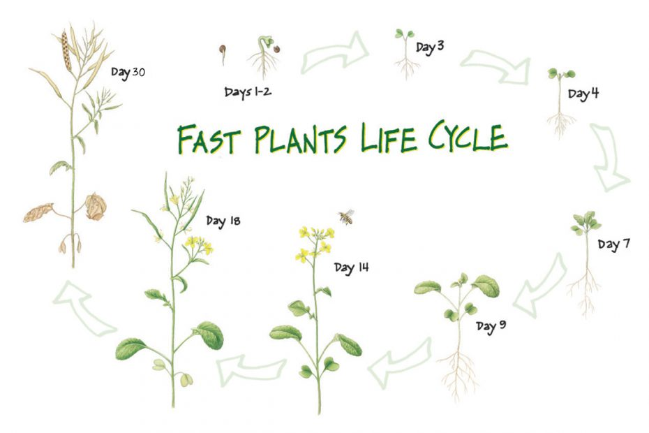

TBD
Summary
A button smashing game that creates art! One player adds sunlight while the other adds water. As you both press the ESP32 buttons, the plant grows and goes through different stages of the plant cycle:
- seed
- sprout
- stem
- leaves
- flower
However, the plant only grows as much as whichever resource is lower. This means if one person is smashing buttons and the other isn’t, the plant wont grown, you need both players (water and sunlight). Once you both hit the target (20 presses), the flower fully blooms. Then, just like the real plant cycle, the game restarts and you’re back to a seed again.
Inspiration & Motivations
We were inspired by the plant lifecycle and the environments that allow plants to thrive such as sufficient water and sunlight. Since plant cant survive with just water or just sunlight, this scenario made a perfect fit for a two-player game where you have to work together.

Technology & Hardware
Each board keeps track of two numbers: water presses and sunlight presses. Whenever you press your button, the boards number increments by 1. The plant’s growth is based on whichever number is lower, so if water is at 15 and sunlight is at 7, the plant only grows to stage 7. That’s why one person can’t win alone. The plant changes stages at 4, 8, 12, and 20, and it fully blooms once both players hit 20. To share info between the boards, we used ESP-NOW. Every time you press, your board sends a message with your team ID, your player ID, and your press count. Your partner’s board reads that message and updates your number on their screen. The boards also resend their count every 250 ms in case a message gets dropped. Once the flower blooms, pressing again resets both boards back to a seed.
How It Came Together

Showcase Reflections
It was so fun seeing everyone’s creativity and getting to play each other’s games. I loved seeing how people added strategy so the order of button presses actually mattered, and how people thought about ways to encourage collaboration between players. My favorite project was the potion mixing game, because each player made a meaningful contribution and you and your partner had to talk it out and work together to get the potions right.
Design Recommendations & Next Steps
Next time, I want to refine the gameplay logic, so instead of having the potentiometer just control speed, I could use it to scale overall difficulty by adding more ice cream flavors and decreasing customer patience over time. Since the game is a bit difficult right now, I can also improve the scoop generating system so it isn't purely random, guaranteeing that every order ticket is actually possible to complete. As for the physical set up, now that I know how to use the ESP32 to simulate a game controller, It’d be cool to design and 3D print a small handheld controller box to house the ESP32, joystick, knob, and button, making the setup more portable and easier to play with.